<!DOCTYPE html>
<html lang="en">
  <head>
    <meta charset="utf-8" />
    <meta name="viewport" content="width=device-width, initial-scale=1.0, maximum-scale=1.0, user-scalable=no" />

    <title></title>
    <link rel="stylesheet" href="dist/reveal.css" />
    <link rel="stylesheet" href="dist/theme/black.css" id="theme" />
    <link rel="stylesheet" href="plugin/highlight/zenburn.css" />
	<link rel="stylesheet" href="css/layout.css" />
	<link rel="stylesheet" href="plugin/customcontrols/style.css">
	<link rel="stylesheet" href="plugin/chalkboard/style.css">

	<link rel="stylesheet" href="plugin/reveal-pointer/pointer.css" />


    <script defer src="dist/fontawesome/all.min.js"></script>

	<script type="text/javascript">
		var forgetPop = true;
		function onPopState(event) {
			if(forgetPop){
				forgetPop = false;
			} else {
				parent.postMessage(event.target.location.href, "app://obsidian.md");
			}
        }
		window.onpopstate = onPopState;
		window.onmessage = event => {
			if(event.data == "reload"){
				window.document.location.reload();
			}
			forgetPop = true;
		}

		function fitElements(){
			const itemsToFit = document.getElementsByClassName('fitText');
			for (const item in itemsToFit) {
				if (Object.hasOwnProperty.call(itemsToFit, item)) {
					var element = itemsToFit[item];
					fitElement(element,1, 1000);
					element.classList.remove('fitText');
				}
			}
		}

		function fitElement(element, start, end){

			let size = (end + start) / 2;
			element.style.fontSize = `${size}px`;

			if(Math.abs(start - end) < 1){
				while(element.scrollHeight > element.offsetHeight){
					size--;
					element.style.fontSize = `${size}px`;
				}
				return;
			}

			if(element.scrollHeight > element.offsetHeight){
				fitElement(element, start, size);
			} else {
				fitElement(element, size, end);
			}		
		}


		document.onreadystatechange = () => {
			fitElements();
			if (document.readyState === 'complete') {
				if (window.location.href.indexOf("?export") != -1){
					parent.postMessage(event.target.location.href, "app://obsidian.md");
				}
				if (window.location.href.indexOf("print-pdf") != -1){
					let stateCheck = setInterval(() => {
						clearInterval(stateCheck);
						window.print();
					}, 250);
				}
			}
	};


        </script>
  </head>
  <body>
    <div class="reveal">
      <div class="slides"><section  data-markdown><script type="text/template"><!-- .slide: class="drop" -->
<div class="" style="position: absolute; left: 0px; top: 0px; height: 700px; width: 960px; min-height: 700px; display: flex; flex-direction: column; align-items: center; justify-content: center" absolute="true">

## 一站式文献阅读批注笔记管理

## Zotero + Obsidian

## 手把手从零开始

[2022-11-28](2022-11-28)
</div></script></section><section ><section data-markdown><script type="text/template"><!-- .slide: class="drop" -->
<div class="" style="position: absolute; left: 0px; top: 0px; height: 700px; width: 960px; min-height: 700px; display: flex; flex-direction: column; align-items: center; justify-content: center" absolute="true">

先看配置完的效果


[Zotero+Obsidian 文献阅读批注笔记管理，给你最流畅舒心的文献阅读体验_哔哩哔哩_bilibili](https://www.bilibili.com/video/av563219663)
</div></script></section><section data-markdown><script type="text/template"><!-- .slide: class="drop" -->
<div class="" style="position: absolute; left: 0px; top: 0px; height: 700px; width: 960px; min-height: 700px; display: flex; flex-direction: column; align-items: center; justify-content: center" absolute="true">

- 导入文档
	- 从本地导入，自动获取元数据
	- 从浏览器，使用拓展导入
		- 自动从 Sci-hub 获取文献
- CNKI 支持，获取中文文献引用数，分区等
- Crossref 引用，Scite 引用
- Zotero 阅读，批注，与 Obsidian 联动
	- 在 Obsidian 里导入 Zotero 文献（模板）
	- 在 Zotero 里更新批注后，可以更新 Obsidian 里的笔记
</div></script></section><section data-markdown><script type="text/template"><!-- .slide: class="drop" -->
<div class="" style="position: absolute; left: 0px; top: 0px; height: 700px; width: 960px; min-height: 700px; display: flex; flex-direction: column; align-items: center; justify-content: center" absolute="true">

<div class="" style="padding: 30px; box-sizing: border-box; position: absolute; left: 0%; top: 0%; height: 100%; width: 50%; display: flex; flex-direction: column; align-items: center; justify-content: center" >

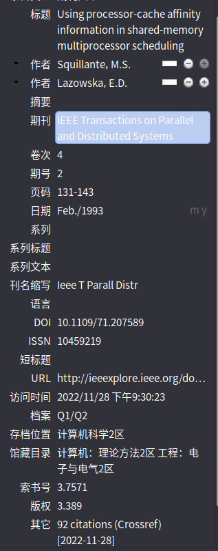


</div>

<div class="" style="padding: 30px; box-sizing: border-box; position: absolute; left: 50%; top: 0%; height: 100%; width: 50%; display: flex; flex-direction: column; align-items: center; justify-content: center" >

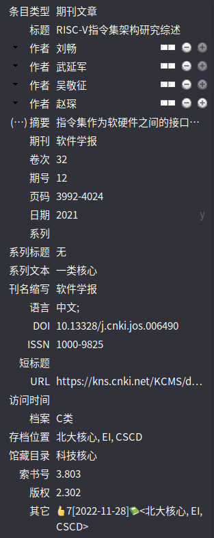


</div>
</div></script></section><section data-markdown><script type="text/template"><!-- .slide: class="drop" -->
<div class="" style="position: absolute; left: 0px; top: 0px; height: 700px; width: 960px; min-height: 700px; display: flex; flex-direction: column; align-items: center; justify-content: center" absolute="true">

<div class="" style="padding: 30px; box-sizing: border-box; position: absolute; left: 0%; top: 0%; height: 100%; width: 50%; display: flex; flex-direction: column; align-items: center; justify-content: center" >

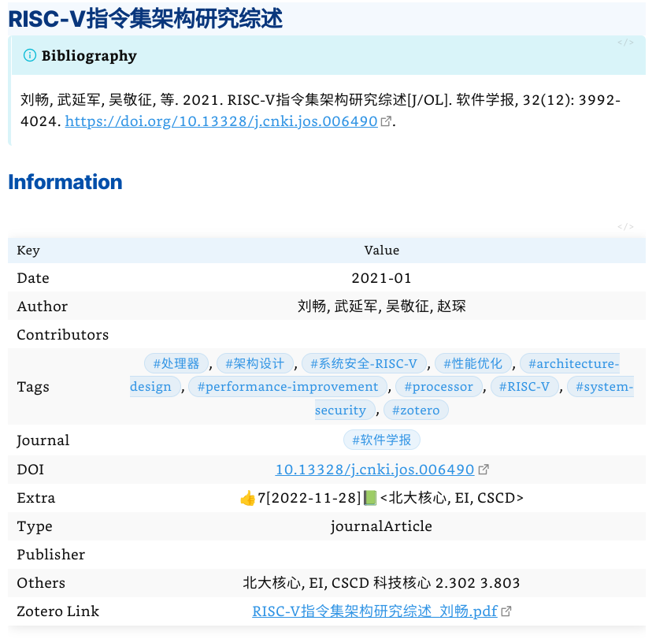


</div>

<div class="" style="padding: 30px; box-sizing: border-box; position: absolute; left: 50%; top: 0%; height: 100%; width: 50%; display: flex; flex-direction: column; align-items: center; justify-content: center" >

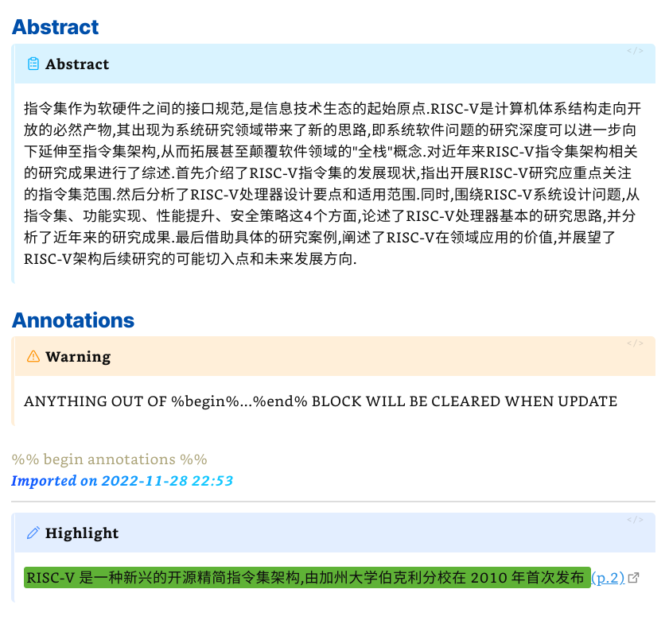


</div>
</div></script></section></section><section  data-markdown><script type="text/template"><!-- .slide: class="drop" -->
<div class="" style="position: absolute; left: 0px; top: 0px; height: 700px; width: 960px; min-height: 700px; display: flex; flex-direction: column; align-items: center; justify-content: center" absolute="true">

# Zotero 下载

[Zotero | Downloads](https://www.zotero.org/download/)
</div></script></section><section ><section data-markdown><script type="text/template"><!-- .slide: class="drop" -->
<div class="" style="position: absolute; left: 0px; top: 0px; height: 700px; width: 960px; min-height: 700px; display: flex; flex-direction: column; align-items: center; justify-content: center" absolute="true">

# Zotero 插件
</div></script></section><section data-markdown><script type="text/template"><!-- .slide: class="drop" -->
<div class="" style="position: absolute; left: 0px; top: 0px; height: 700px; width: 960px; min-height: 700px; display: flex; flex-direction: column; align-items: center; justify-content: center" absolute="true">

Zotero 插件列表，[下载地址](https://zotero-chinese.gitee.io/zotero-plugins/#/)
- Jasminum
	 中文文献从 CNKI 获取元数据
- Sci-Hub Plugin for Zotero
- Zotero Update IFs
	  更新影响因子
- DOI Manager
	  获取 short/long DOI
- Zotero Citation Counts Manager
	  自动获取引用数
- Zotero PDF Translate
	  PDF 翻译
- Delitem
	 删除条目与附件
- Better BibTex for Zotero
	   与 Obsidian 联动需要
- [GitHub - l0o0/translators_CN: Zotero translator中文网页抓取插件](https://github.com/l0o0/translators_CN)


国内网络即可下载
</div></script></section><section data-markdown><script type="text/template"><!-- .slide: class="drop" -->
<div class="" style="position: absolute; left: 0px; top: 0px; height: 700px; width: 960px; min-height: 700px; display: flex; flex-direction: column; align-items: center; justify-content: center" absolute="true">

如何在 Zotero 里安装插件？

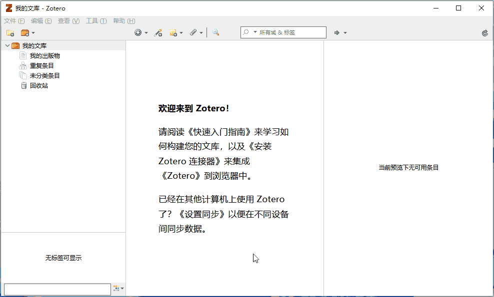
</div></script></section><section data-markdown><script type="text/template"><!-- .slide: class="drop" -->
<div class="" style="position: absolute; left: 0px; top: 0px; height: 700px; width: 960px; min-height: 700px; display: flex; flex-direction: column; align-items: center; justify-content: center" absolute="true">

如何在打开插件的设置界面？
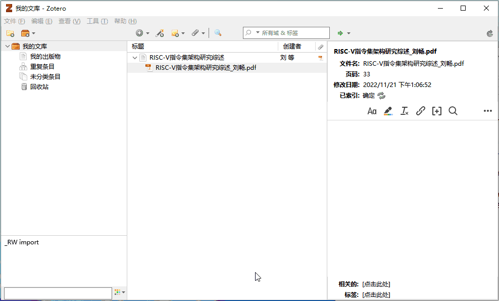
</div></script></section><section data-markdown><script type="text/template"><!-- .slide: style="font-size: 20pt" class="drop" -->
<div class="" style="position: absolute; left: 0px; top: 0px; height: 700px; width: 960px; min-height: 700px; display: flex; flex-direction: column; align-items: center; justify-content: center" absolute="true">

<div class="" style="padding: 30px; box-sizing: border-box; position: absolute; left: 0%; top: 0%; height: 100%; width: 50%; display: flex; flex-direction: column; align-items: center; justify-content: center" >


## Jasminum 
1.  拆分或合并 Zotero 中条目作者姓和名
2.  根据知网上下载的文献文件来抓取引用信息（就是根据文件名）
3.  添加中文PDF/CAJ时，自动拉取知网数据，该功能默认关闭。需要到设置中开启，注意添加的文件名需要含有中文，全英文没有效果（还是根据文件名）
4.  为知网的学位论文 PDF 添加书签
5.  更新中文 translators
6.  拉取文献引用次数，是否核心期刊
</div>

<div class="" style="padding: 30px; box-sizing: border-box; position: absolute; left: 50%; top: 0%; height: 100%; width: 50%; display: flex; flex-direction: column; align-items: center; justify-content: center" >

建议设置里，勾选此项
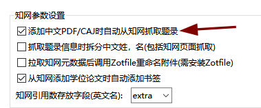

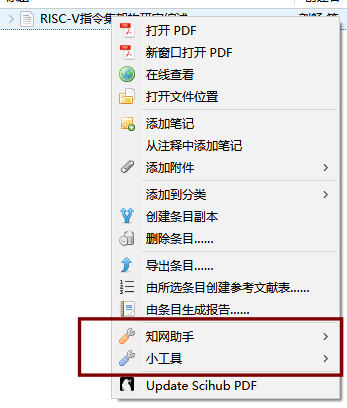


</div>
</div></script></section><section data-markdown><script type="text/template"><!-- .slide: style="font-size: 20pt" class="drop" -->
<div class="" style="position: absolute; left: 0px; top: 0px; height: 700px; width: 960px; min-height: 700px; display: flex; flex-direction: column; align-items: center; justify-content: center" absolute="true">

<div class="" style="padding: 30px; box-sizing: border-box; position: absolute; left: 0%; top: 0%; height: 100%; width: 50%; display: flex; flex-direction: column; align-items: center; justify-content: center" >

## Sci-Hub Plugin for Zotero
从 Sci-hub 获取论文
</div>

<div class="" style="padding: 10px; box-sizing: border-box; position: absolute; left: 50%; top: 0%; height: 100%; width: 50%; display: flex; flex-direction: column; align-items: center; justify-content: center" >

建议设置里，取消勾选此条，因为当论文是 Open Access 的，会重复下载

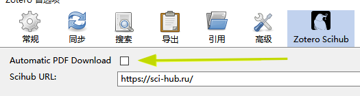


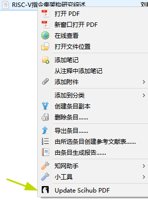


</div>
</div></script></section><section data-markdown><script type="text/template"><!-- .slide: style="font-size: 20pt" class="drop" -->
<div class="" style="position: absolute; left: 0px; top: 0px; height: 700px; width: 960px; min-height: 700px; display: flex; flex-direction: column; align-items: center; justify-content: center" absolute="true">

<div class="" style="padding: 30px; box-sizing: border-box; position: absolute; left: 0%; top: 0%; height: 100%; width: 50%; display: flex; flex-direction: column; align-items: center; justify-content: center" >

## Zotero Update IFs
使用期刊名称从唯问更新期刊英文期刊的`JCR分区`、`中科院分区`、`影响因子`和`5年影响因子`，对于中文期刊更新`CSCD收录`、`北大核心`、`科技核心`、`复合影响因子`、`综合影响因子`。
</div>

<div class="" style="padding: 30px; box-sizing: border-box; position: absolute; left: 50%; top: 0%; height: 100%; width: 50%; display: flex; flex-direction: column; align-items: center; justify-content: center" >

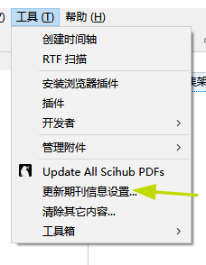


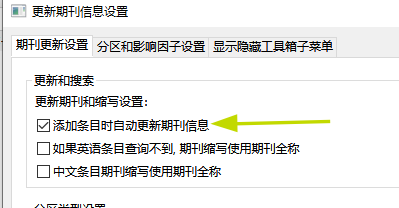

</div>
</div></script></section><section data-markdown><script type="text/template"><!-- .slide: style="font-size: 20pt" class="drop" -->
<div class="" style="position: absolute; left: 0px; top: 0px; height: 700px; width: 960px; min-height: 700px; display: flex; flex-direction: column; align-items: center; justify-content: center" absolute="true">

<div class="" style="padding: 30px; box-sizing: border-box; position: absolute; left: 0%; top: 0%; height: 100%; width: 50%; display: flex; flex-direction: column; align-items: center; justify-content: center" >

## DOI Manager
The add-on can auto-fetch DOI names for journal articles using the CrossRef API, as well as look up shortDOI names using [http://shortdoi.org](http://shortdoi.org/).
</div>

<div class="" style="padding: 30px; box-sizing: border-box; position: absolute; left: 50%; top: 0%; height: 100%; width: 50%; display: flex; flex-direction: column; align-items: center; justify-content: center" >

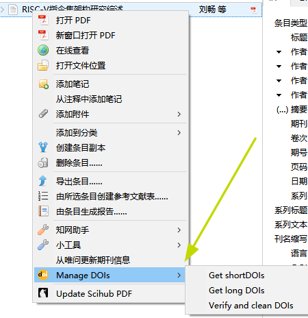


安装即可，不需要额外设置
</div>
</div></script></section><section data-markdown><script type="text/template"><!-- .slide: style="font-size: 20pt" class="drop" -->
<div class="" style="position: absolute; left: 0px; top: 0px; height: 700px; width: 960px; min-height: 700px; display: flex; flex-direction: column; align-items: center; justify-content: center" absolute="true">

<div class="" style="padding: 30px; box-sizing: border-box; position: absolute; left: 0%; top: 0%; height: 100%; width: 50%; display: flex; flex-direction: column; align-items: center; justify-content: center" >

## Zotero PDF Translate

划词翻译与标题、摘要、批注翻译
</div>

<div class="" style="padding: 30px; box-sizing: border-box; position: absolute; left: 50%; top: 0%; height: 100%; width: 50%; display: flex; flex-direction: column; align-items: center; justify-content: center" >

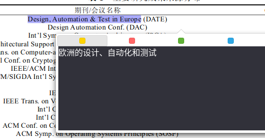


[KEY设置](https://zotero.yuque.com/staff-gkhviy/pdf-trans/ngu6mc)

设置按照官方文档，推荐小牛与百度
</div>
</div></script></section><section data-markdown><script type="text/template"><!-- .slide: style="font-size: 20pt" class="drop" -->
<div class="" style="position: absolute; left: 0px; top: 0px; height: 700px; width: 960px; min-height: 700px; display: flex; flex-direction: column; align-items: center; justify-content: center" absolute="true">

<div class="" style="padding: 30px; box-sizing: border-box; position: absolute; left: 0%; top: 0%; height: 100%; width: 50%; display: flex; flex-direction: column; align-items: center; justify-content: center" >

## Zotero Citation Counts Manager
 auto-fetch citation counts for journal articles using various APIs, including [Crossref](https://www.crossref.org/), [Inspire HEP](https://inspirehep.net/),

## Delitem
删除条目或分类的同时将链接的附件也一块删除
</div>

<div class="" style="padding: 30px; box-sizing: border-box; position: absolute; left: 50%; top: 0%; height: 100%; width: 50%; display: flex; flex-direction: column; align-items: center; justify-content: center" >

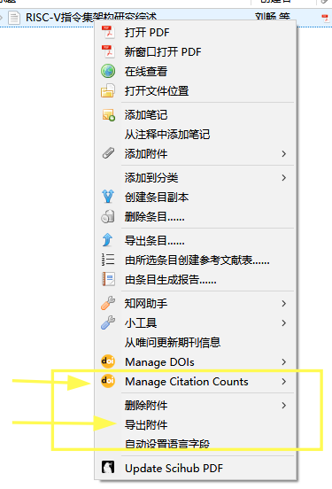


安装即可，无需设置
</div>
</div></script></section><section data-markdown><script type="text/template"><!-- .slide: style="font-size: 20pt" class="drop" -->
<div class="" style="position: absolute; left: 0px; top: 0px; height: 700px; width: 960px; min-height: 700px; display: flex; flex-direction: column; align-items: center; justify-content: center" absolute="true">

<div class="" style="padding: 30px; box-sizing: border-box; position: absolute; left: 0%; top: 0%; height: 100%; width: 50%; display: flex; flex-direction: column; align-items: center; justify-content: center" >

## [Zotero translators](https://github.com/l0o0/translators_CN)
Zotero 中有许多抓取中文学术网站的插件，这些插件有些已经非常老旧，缺少及时的维护。希望能在这里召集一些志同道合的朋友，共同维护中文学术或其他类型网站的抓取插件

随便挑一个能下的。

[下载地址](https://github.com/l0o0/translators_CN/archive/refs/heads/master.zip)
[下载地址](https://gh-proxy-misakano7545.koyeb.app/https://github.com/l0o0/translators_CN/archive/refs/heads/master.zip)
[下载地址](https://gh.con.sh/https://github.com/l0o0/translators_CN/archive/refs/heads/master.zip)
[下载地址](https://ghproxy.com/https://github.com/l0o0/translators_CN/archive/refs/heads/master.zip)
</div>

<div class="" style="padding: 30px; box-sizing: border-box; position: absolute; left: 50%; top: 0%; height: 100%; width: 50%; display: flex; flex-direction: column; align-items: center; justify-content: center" >


文字教程
[GitHub - l0o0/translators_CN: Zotero translator中文网页抓取插件](https://github.com/l0o0/translators_CN#-%E5%A6%82%E4%BD%95%E4%BD%BF%E7%94%A8)

视频教程
[Zotero 更新 知网Translator 翻译器教程_哔哩哔哩_bilibili](https://www.bilibili.com/video/av842736097)
</div>
</div></script></section></section><section ><section data-markdown><script type="text/template"><!-- .slide: class="drop" -->
<div class="" style="position: absolute; left: 0px; top: 0px; height: 700px; width: 960px; min-height: 700px; display: flex; flex-direction: column; align-items: center; justify-content: center" absolute="true">

# 与 Obsidian 联动
</div></script></section><section data-markdown><script type="text/template"><!-- .slide: class="drop" -->
<div class="" style="position: absolute; left: 0px; top: 0px; height: 700px; width: 960px; min-height: 700px; display: flex; flex-direction: column; align-items: center; justify-content: center" absolute="true">

Zotero 里安装插件 

Better BibTeX for Zotero


<SPAN STYLE="font-size: 20px">
这个链接不一定是最新版，建议去官网下

安装过程一路默认即可
</SPAN>

[zotero-better-bibtex-6.7.42.xpi  2022-11-29](https://github.91chi.fun/https://github.com/retorquere/zotero-better-bibtex/releases/download/v6.7.42/zotero-better-bibtex-6.7.42.xpi)
</div></script></section><section data-markdown><script type="text/template"><!-- .slide: class="drop" -->
<div class="" style="position: absolute; left: 0px; top: 0px; height: 700px; width: 960px; min-height: 700px; display: flex; flex-direction: column; align-items: center; justify-content: center" absolute="true">

Obsidian 里安装插件

[Obsidian Zotero Integration](https://github.com/mgmeyers/obsidian-zotero-integration)

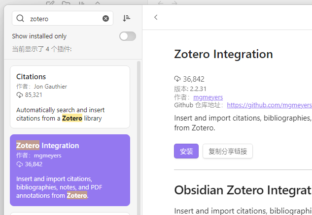
</div></script></section><section data-markdown><script type="text/template"><!-- .slide: class="drop" -->
<div class="" style="position: absolute; left: 0px; top: 0px; height: 700px; width: 960px; min-height: 700px; display: flex; flex-direction: column; align-items: center; justify-content: center" absolute="true">

<div class="" style="padding: 30px; box-sizing: border-box; position: absolute; left: 0%; top: 0%; height: 100%; width: 50%; display: flex; flex-direction: column; align-items: center; justify-content: center" >

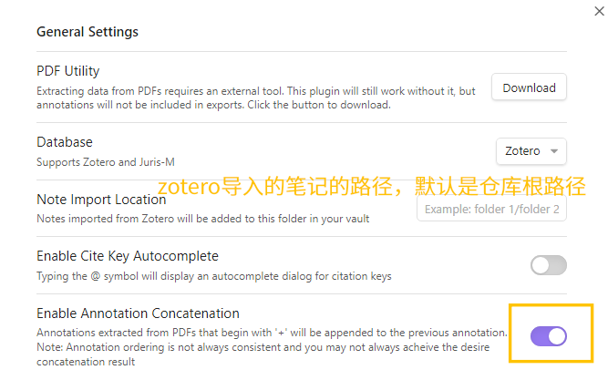

</div>

<div class="" style="padding: 30px; box-sizing: border-box; position: absolute; left: 50%; top: 0%; height: 100%; width: 50%; display: flex; flex-direction: column; align-items: center; justify-content: center" >

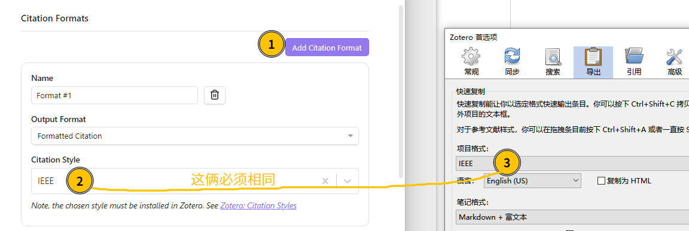

</div>
</div></script></section><section data-markdown><script type="text/template"><!-- .slide: class="drop" -->
<div class="" style="position: absolute; left: 0px; top: 0px; height: 700px; width: 960px; min-height: 700px; display: flex; flex-direction: column; align-items: center; justify-content: center" absolute="true">

<div class="" style="padding: 30px; box-sizing: border-box; position: absolute; left: 0%; top: 0%; height: 100%; width: 50%; display: flex; flex-direction: column; align-items: center; justify-content: center" >

[模板下载 Template.md](https://gist.githubusercontent.com/Delta-in-hub/3e5975937cc82ea6cae9b421210be729/raw/Template.md)


将下载的模板放到 Obsidian 笔记仓库里。

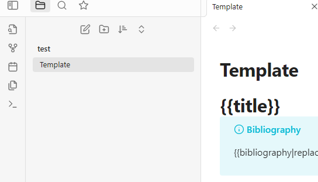

</div>

<div class="" style="padding: 30px; box-sizing: border-box; position: absolute; left: 50%; top: 0%; height: 100%; width: 50%; display: flex; flex-direction: column; align-items: center; justify-content: center" >

插件的 Import Format 设置

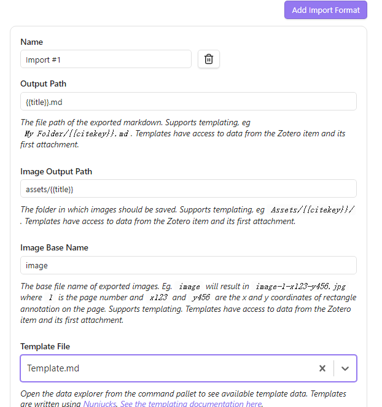

</div>
</div></script></section><section data-markdown><script type="text/template"><!-- .slide: style="font-size: 20pt" class="drop" -->
<div class="" style="position: absolute; left: 0px; top: 0px; height: 700px; width: 960px; min-height: 700px; display: flex; flex-direction: column; align-items: center; justify-content: center" absolute="true">

设置完成 

`Ctrl + p` 打开命令行

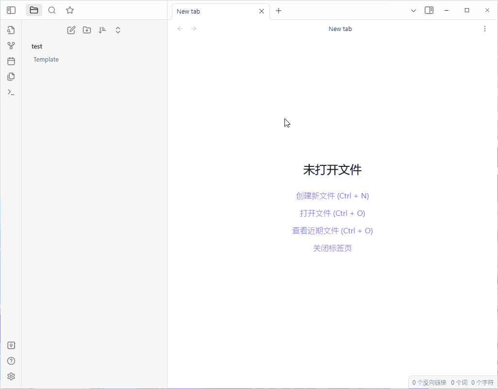
</div></script></section><section data-markdown><script type="text/template"><!-- .slide: class="drop" -->
<div class="" style="position: absolute; left: 0px; top: 0px; height: 700px; width: 960px; min-height: 700px; display: flex; flex-direction: column; align-items: center; justify-content: center" absolute="true">

如果出现 `# Error processing PDF: error: expected object number`

请看
https://github.com/mgmeyers/obsidian-zotero-integration/issues/131

简单说，[解锁 pdf](https://www.ilovepdf.com/unlock_pdf) 即可。
</div></script></section></section><section ><section data-markdown><script type="text/template"><!-- .slide: class="drop" -->
<div class="" style="position: absolute; left: 0px; top: 0px; height: 700px; width: 960px; min-height: 700px; display: flex; flex-direction: column; align-items: center; justify-content: center" absolute="true">

# Zotero 备份
</div></script></section><section data-markdown><script type="text/template"><!-- .slide: class="drop" -->
<div class="" style="position: absolute; left: 0px; top: 0px; height: 700px; width: 960px; min-height: 700px; display: flex; flex-direction: column; align-items: center; justify-content: center" absolute="true">

对于 `papers` 文件夹手动使用坚果云进行同步。

这种和使用 WebDAV 相比，优点就是 PDF 被很好的重命名了，方便在坚果云中检索。
WebDAV 同步在坚果云里是一堆哈希值作文件名的 zip 包和其他文件。

因为绝对路径的问题，没法真正跨平台同步。
</div></script></section><section data-markdown><script type="text/template"><!-- .slide: class="drop" -->
<div class="" style="position: absolute; left: 0px; top: 0px; height: 700px; width: 960px; min-height: 700px; display: flex; flex-direction: column; align-items: center; justify-content: center" absolute="true">

还是使用 WebDAV，上传会压缩成 zip，省空间。
缺点是与 Zotero 强耦合，坚果云中没法查看。

更换平台后，在 Zotero 中设置好 WebDAV 相关，不需要下载坚果云本身。

[如何在Zotero中设置webdav连接到坚果云？](https://help.jianguoyun.com/?p=3168)
</div></script></section></section><section ><section data-markdown><script type="text/template"><!-- .slide: class="drop" -->
<div class="" style="position: absolute; left: 0px; top: 0px; height: 700px; width: 960px; min-height: 700px; display: flex; flex-direction: column; align-items: center; justify-content: center" absolute="true">

# Obsidian
</div></script></section><section data-markdown><script type="text/template"><!-- .slide: class="drop" -->
<div class="" style="position: absolute; left: 0px; top: 0px; height: 700px; width: 960px; min-height: 700px; display: flex; flex-direction: column; align-items: center; justify-content: center" absolute="true">

TODO
</div></script></section></section></div>
    </div>

    <script src="dist/reveal.js"></script>

    <script src="plugin/markdown/markdown.js"></script>
    <script src="plugin/highlight/highlight.js"></script>
    <script src="plugin/zoom/zoom.js"></script>
    <script src="plugin/notes/notes.js"></script>
    <script src="plugin/math/math.js"></script>
	<script src="plugin/mermaid/mermaid.js"></script>
	<script src="plugin/chart/chart.min.js"></script>
	<script src="plugin/chart/plugin.js"></script>
	<script src="plugin/customcontrols/plugin.js"></script>
	<script src="plugin/chalkboard/plugin.js"></script>
	<script src="plugin/reveal-pointer/pointer.js"></script>
	<script src="plugin/elapsed-time-bar/elapsed-time-bar.js"></script>

    <script>
      function extend() {
        var target = {};
        for (var i = 0; i < arguments.length; i++) {
          var source = arguments[i];
          for (var key in source) {
            if (source.hasOwnProperty(key)) {
              target[key] = source[key];
            }
          }
        }
        return target;
      }

	  function isLight(color) {
		let hex = color.replace('#', '');

		// convert #fff => #ffffff
		if(hex.length == 3){
			hex = `${hex[0]}${hex[0]}${hex[1]}${hex[1]}${hex[2]}${hex[2]}`;
		}

		const c_r = parseInt(hex.substr(0, 2), 16);
		const c_g = parseInt(hex.substr(2, 2), 16);
		const c_b = parseInt(hex.substr(4, 2), 16);
		const brightness = ((c_r * 299) + (c_g * 587) + (c_b * 114)) / 1000;
		return brightness > 155;
	}

	var bgColor = getComputedStyle(document.documentElement).getPropertyValue('--r-background-color').trim();
	var isLight = isLight(bgColor);

	if(isLight){
		document.body.classList.add('has-light-background');
	} else {
		document.body.classList.add('has-dark-background');
	}

      // default options to init reveal.js
      var defaultOptions = {
        controls: true,
        progress: true,
        history: true,
        center: true,
        transition: 'default', // none/fade/slide/convex/concave/zoom
        plugins: [
          RevealMarkdown,
          RevealHighlight,
          RevealZoom,
          RevealNotes,
          RevealMath.MathJax3,
		  RevealMermaid,
		  RevealChart,
		  RevealCustomControls,
	      RevealPointer,
		  RevealChalkboard, 
		  ElapsedTimeBar
        ],


    	allottedTime: 120 * 1000,

		mathjax3: {
			mathjax: 'plugin/math/mathjax/tex-mml-chtml.js',
		},
		markdown: {
		  gfm: true,
		  mangle: true,
		  pedantic: false,
		  smartLists: false,
		  smartypants: false,
		},

		mermaid: {
			theme: isLight ? 'default' : 'dark',
		},

		customcontrols: {
			controls: [
				{id: 'toggle-overview',
				title: 'Toggle overview (O)',
				icon: '<i class="fa fa-th"></i>',
				action: 'Reveal.toggleOverview();'
				},
				{ icon: '<i class="fa fa-pen-square"></i>',
				title: 'Toggle chalkboard (B)',
				action: 'RevealChalkboard.toggleChalkboard();'
				},
				{ icon: '<i class="fa fa-pen"></i>',
				title: 'Toggle notes canvas (C)',
				action: 'RevealChalkboard.toggleNotesCanvas();'
				},
			]
		},
      };

      // options from URL query string
      var queryOptions = Reveal().getQueryHash() || {};

      var options = extend(defaultOptions, {"width":960,"height":700,"margin":0.04,"controls":true,"progress":true,"slideNumber":true,"transition":"concave","transitionSpeed":"default"}, queryOptions);
    </script>

    <script>
      Reveal.initialize(options);
    </script>
  </body>

  <!-- created with Advanced Slides -->
</html>
